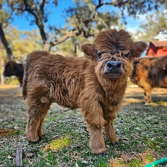

Meet Miniature Highland Cows on a Private Farm Visit in Pipe Creek
Shaggy coats, long horns, and gentle faces. Spend a morning up close with miniature Scottish Highland cattle, then come home to a cabin at Al's Hideaway in the same Hill Country town.
Check Availability & Book Your StayThe Highland Cow Experience Everyone Is Talking About
Highland cows are the shaggy, long-horned Scottish cattle that have taken over social media, and there is a working ranch for them right here in Pipe Creek. Paisley's Pasture is a family-run ranch that raises miniature Scottish Highland cattle, and it offers private ranch visits so guests can meet the herd in person.
This is not a zoo or a drive-through attraction. It is a private ranch with family-owned animals, and the visit is a relaxed, up-close morning with the herd. Al's Hideaway is in the same Pipe Creek community, so it fits easily into a full Texas Hill Country weekend.
Good to know: Paisley's Pasture is not open to the public and offers only a few visits each month, so reserve early. Details below come from the ranch's own website. Confirm current dates and pricing with them when you book.

What to Expect on a Ranch Visit
A quick look at the private visit, as listed by Paisley's Pasture.
A private visit in a relaxed setting, not a crowded group tour.
Currently listed at $50 each, with children under 5 free. Confirm when you reserve.
Younger children are welcome too. The ranch says older kids and adults enjoy it most.
Only a few visits are offered each month, so plan your trip around them.
Who You'll Meet
The Highland cattle are the stars, but they have plenty of company.
Miniature Scottish Highlands
The shaggy, long-horned herd that started it all. Friendly, low-maintenance, and still powerful animals that deserve respect.
Goats, Sheep, Pigs & Donkeys
Guests can feed the ranch's goats, sheep, pigs, and donkeys during the visit.
Giant Tortoises
Yes, really. Meet the ranch's giant tortoises before you leave.
Photos Worth Bringing a Camera For
Rolling Hill Country pasture, fuzzy faces, and golden light. Bring your phone or a real camera.
How to Plan Your Highland Cow Weekend
Ranch visits are limited, so lock in the visit first and build your stay around it.
Email the Ranch
Send Paisley's Pasture your preferred dates, party size, and the ages of any kids. Reservations are made by email at PaisleysPastureTX@gmail.com.
Book Your Stay With Us
Once your visit is confirmed, reserve a cabin, RV site, or cowboy campsite at Al's Hideaway. Book 2+ nights and use code FUN to save 10%.
Meet the Herd
Enjoy your private 90-minute visit, then head back to Al's Hideaway for the pool, MeMaw's Country Store, and a campfire.
Make It a Full Hill Country Weekend
Pipe Creek puts you in the middle of the best of the Hill Country. Here is an easy way to fill the rest of your trip.
Start with your private ranch visit while the day is cool.
Sno cones, smoothies, and cooked food are on-site at Al's Hideaway, so there is no trip into town.
Relax by the pool or explore the property's 20 acres and 2 creeks.
Grab firewood at the store and watch the Milky Way with no city noise. Pipe Creek has some of the darkest skies in Central Texas.
Want more to do? Explore the Texas Hill Country guide for Bandera, rivers, and rodeos, or see our cabins near Kronkosky State Natural Area, opening this fall.
Stay Where the Trip Really Happens
Al's Hideaway is a family-owned, pet-friendly retreat in Pipe Creek with no pet fees and no cleaning fees.

Real beds, A/C, and pets always free. See the cabins.

10 full-hookup RV sites and 9 cowboy campsites. See RV & camping.

Cool off after the ranch visit and stock up at MeMaw's Country Store.
Best Time for a Highland Cow Visit
Paisley's Pasture offers ranch visits from October through May, which happens to be the best weather of the Hill Country year.